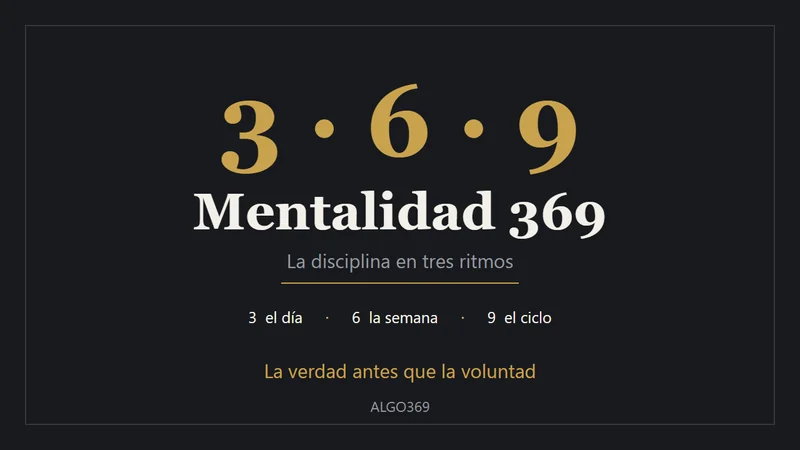
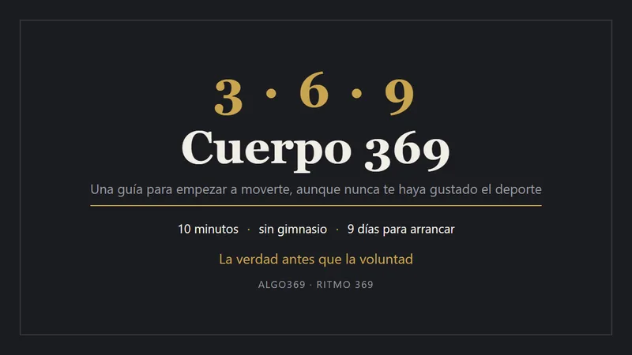

Empieza aquíGuía «Mentalidad 369»
El método en tres ritmos (el día, la semana, el ciclo), las cuatro trampas y una página para la pared.
PDF · 4 páginasCHF 9Comprar
Escribimos sobre el hogar, el bienestar y las pequeñas decisiones que se toman cada día.
Solo recomendamos lo que hemos usado nosotros mismos o lo que podemos justificar. Cuando no sabemos algo, lo decimos.
Aquí solo está lo que existe y se puede comprar ahora. Cuando haya más, aparecerá aquí, no antes.
En español, de momento hay dos PDF: la guía Mentalidad 369 y Cuerpo 369. Se entregan al instante a través de Gumroad. Si no te sirven, escríbenos y te devolvemos el dinero.

Empieza aquíEl método en tres ritmos (el día, la semana, el ciclo), las cuatro trampas y una página para la pared.
PDF · 4 páginas
NuevoPara quien no hace deporte o lo dejó. 10 minutos al día, sin gimnasio: un arranque de 9 días y un plan de 9 semanas, con hojas para imprimir.
PDF · 15 páginasTodos los demás productos solo existen, por ahora, en portugués. Los encontrarás en la tienda en portugués.
Textos largos, sin prisa, sobre cosas que vale la pena entender bien una vez.
Casi todos los que compran una costilla de Adán (Monstera) se hacen la misma pregunta al cabo de unos meses: ¿por qué las hojas nuevas salen sin ningún agujero? La respuesta dice mucho de la planta, y del sitio donde la has puesto.
Esos cortes se llaman fenestraciones y no son ni un defecto ni una enfermedad. Hay dos explicaciones aceptadas, y las dos tienen que ver con el origen de la planta: el suelo húmedo y sombrío de los bosques tropicales del sur de México, Guatemala y Panamá. Allí la monstera no es una planta de maceta, sino una trepadora que se agarra a los troncos de los árboles y crece hacia la luz. Puede superar los veinte metros de altura.
La primera explicación es la luz. Debajo de una hoja enorme y cerrada, todo queda a oscuras. Por los agujeros pasa la luz hasta las hojas inferiores de la misma planta. La segunda son el viento y la lluvia: una hoja llena de aberturas aguanta una tormenta tropical sin rasgarse.
De ahí sale la parte práctica. Si tu monstera saca hojas pequeñas y cerradas, casi siempre se debe a una de dos cosas: poca luz o nada a lo que trepar. Un tutor de musgo cambia el aspecto de la planta más que cualquier abono.
Y las raíces aéreas que salen del tallo no son ni un problema ni suciedad: con ellas se agarra a los árboles. Puedes guiarlas hacia la tierra de la maceta.
Sobre el nombre: Monstera viene del latín monstrum, por el tamaño casi monstruoso de las hojas. Deliciosa se refiere al fruto. Es comestible y sabe a una mezcla de piña y plátano, pero solo cuando está completamente maduro. Verde, irrita la boca por los cristales de oxalato de calcio. En casa, en la práctica, la monstera casi nunca da fruto.
Es una de las plantas más vendidas del mundo y una de las que más mueren en casa, casi siempre por el mismo motivo. Y ese motivo es justo lo contrario de lo que se piensa.
El aloe vera procede de la península arábiga, de terrenos secos y pedregosos. Se cultiva desde hace tanto tiempo que ya casi no se encuentra realmente silvestre: ha viajado con las personas durante milenios. Aparece en tablillas sumerias de hacia el año 2100 a. C. y en el papiro egipcio Ebers, de hacia el 1550 a. C., que describe preparados medicinales.
Las hojas carnosas son una reserva. Por dentro contienen un gel que es casi solo agua: así la planta aguanta meses sin lluvia. Ese mismo gel se usa desde hace siglos para calmar quemaduras solares y pequeñas irritaciones de la piel.
El error más común: tratarlo como las demás plantas de interior. Riego una vez por semana, tierra buena y rica en nutrientes, maceta sin agujero de drenaje. A los tres meses las hojas se ponen blandas y vidriosas. No es sed, sino lo contrario: las raíces se han podrido.
Un dato práctico que poca gente conoce: debajo de la piel verde hay una capa amarilla, el llamado látex o aloína, de sabor muy amargo. Sobre la piel se pone el gel transparente del centro, no esa capa.
Y la historia de que Cleopatra lo usaba es exactamente eso: una leyenda. No está documentada. Pero muestra cuánto tiempo hace que esta planta tiene fama.
Es la cifra que aparece en grande en la caja y la que casi todo el mundo compara. También es la que menos dice.
Los vatios son consumo, no potencia de aspiración. La cifra indica cuánta electricidad gasta el aparato, no cuánto trabajo hace con ella. Un motor mal diseñado de 1200 W puede aspirar peor que uno bien diseñado de 500 W: la diferencia se pierde en calor y ruido.
Desde 2017 esto ya no es teoría. El reglamento europeo 666/2013 limita desde entonces las aspiradoras domésticas a 900 W. Mucha gente pensó que las aspiradoras se volverían flojas. No ha sido así: los fabricantes tuvieron que mejorar el diseño en lugar de poner un motor más grande.
Las cifras que vale la pena buscar son otras:
Air Watts (AW) – mide la potencia de aspiración a la salida, es decir, después de las pérdidas en el tubo y el cepillo. Es lo más parecido a lo que notas al aspirar. En las buenas aspiradoras sin cable está entre 100 y 250 AW.
Pascales (Pa) o kPa – miden la depresión que puede generar el motor. Útil para comparar, pero no basta por sí sola: mucha depresión con poco caudal de aire levanta el polvo fino y deja el resto.
Caudal de aire (litros por segundo) – es lo que se lleva la suciedad más gruesa.
La potencia de aspiración solo sirve si el aire pasa. Una bolsa medio llena, un filtro sucio o un tubo atascado reducen el rendimiento de cualquier aparato, por caro que haya sido. Limpiar el filtro aporta más que cambiar de aspiradora, y es el mantenimiento que casi nadie hace.
Una palabra más sobre la comparación entre aparatos con y sin cable: las aspiradoras de batería modernas ganan en comodidad y pierden en autonomía en el nivel fuerte. Si la casa es grande, lo que cuenta no es la potencia máxima, sino cuántos minutos aguanta el aparato en ese nivel. Suele ser bastante menos de lo anunciado, porque la cifra se refiere al nivel más bajo.
«HEPA» se ha convertido en una especie de sello de calidad y aparece en cosas que no tienen nada que ver entre sí. Vale la pena saber qué significa la palabra, porque su significado está definido con precisión.
Un filtro HEPA de verdad retiene el 99,97 % de las partículas de 0,3 micrómetros. Esa cifra no está elegida al azar, y la explicación sorprende a casi todo el mundo.
Parece contradictorio, pero no lo es. Las partículas grandes chocan contra las fibras y se quedan enganchadas. Las muy pequeñas se mueven de forma irregular (movimiento browniano) y por eso también acaban tocando una fibra. Las de 0,3 µm son las que mejor se escapan entre los dos efectos; por eso el peor caso se mide en ese tamaño. Un filtro que en el peor caso retiene el 99,97 % retiene más en todo lo demás.
Dos trampas al comprar:
«Tipo HEPA» o «similar a HEPA» no es HEPA. Esas expresiones no tienen definición legal y pueden aparecer en un filtro que retiene el 85 %. La palabra que importa va acompañada de una norma: en Europa, la EN 1822, con las clases a partir de H13.
El filtro no es el aparato. Un buen filtro en un purificador que apenas mueve aire limpia poco. Lo decisivo es el CADR (Clean Air Delivery Rate) en metros cúbicos por hora: indica cuánto aire limpio entrega realmente el aparato. Una habitación de 20 m² con una altura de techo normal necesita bastante más CADR de lo que suele dar a entender la caja.
Y lo que un filtro HEPA no hace: eliminar gases y olores. Retiene las partículas del humo, pero el olor a humo, los compuestos orgánicos volátiles y el olor a pintura fresca son gases, no partículas. Para eso hace falta carbón activo. Es otro filtro, y se desgasta antes.
Si tienes alergias, notarás la diferencia sobre todo en el dormitorio y por la noche. Un buen aparato en el sitio adecuado aporta más que un aparato enorme en el salón.
Algunas plantas mueren porque se las cuida demasiado poco. La lavanda muere de lo contrario, y por eso tanta gente se rinde después de la primera maceta.
Crece de forma natural en las laderas secas y calizas del Mediterráneo occidental: en la Provenza, en Cataluña, en las montañas de Italia. Tierra pobre, mucha piedra, sol todo el día. Los campos violetas de las fotos son cultivos, pero la planta procede realmente de allí.
De eso se deduce todo lo demás. La tierra rica y húmeda la mata. Lo habitual es esto: se compra una lavanda, se planta en buena tierra oscura de saco y se riega dos veces por semana como las demás, y a los dos meses se vuelve gris por el centro y ya no se recupera. No era sed, sino podredumbre de las raíces.
Sobre el aroma: procede de aceites esenciales que están en pelillos diminutos en la superficie de las hojas y las flores. Para la planta no son un perfume, sino una protección contra los insectos y el calor. Al frotar las hojas entre los dedos, esos pelillos se rompen: por eso el aroma se queda en las manos.
También el nombre delata para qué se usaba: viene del latín lavare, lavar. Los romanos echaban lavanda al agua del baño y a la ropa. El gesto sigue estando en el nombre.
Algo práctico que cambia el aspecto de la planta al cabo de unos años: podar después de la floración, pero sin llegar a la madera vieja. Sin esa poda, la lavanda se lignifica desde abajo y se vuelve rala, y entonces ya no hay nada que hacer.
Y si tienes balcón: una sola planta cambia cuántas abejas pasan por allí. Precisamente por eso la miel de lavanda tiene un sabor propio.
La mayoría de las plantas de interior que mueren no mueren de sed. Mueren por exceso de agua, y casi siempre porque alguien decidió regar «todos los miércoles».
El problema del calendario: la planta no vive según el calendario. La misma planta bebe mucho más en julio con la ventana abierta que en enero con la calefacción encendida y los días cortos. Quien riega siempre igual acierta medio año y se equivoca el otro medio.
Es sencillo y funciona con la mayoría de las plantas de interior. Dos excepciones que conviene conocer:
Suculentas, aloe y cactus – espera a que la tierra esté seca del todo, no solo en la superficie. En invierno pueden pasar semanas sin agua.
Helechos y plantas de hojas finas – quieren la tierra siempre ligeramente húmeda, pero nunca encharcada.
Así reconoces el exceso de agua: hojas amarillas y blandas, tierra que huele a moho, mosquitos pequeños alrededor de la maceta. Así reconoces la falta: hojas lacias pero aún firmes, tierra que se separa del borde de la maceta.
Las dos cosas se confunden a menudo, porque las hojas cuelgan en los dos casos. La diferencia se nota al tocarlas: lacias y blandas es exceso de agua; lacias y secas es falta.
Y lo más importante, que no tiene nada que ver con el riego: la maceta necesita un agujero de drenaje. Una maceta decorativa sin desagüe convierte cualquier riego correcto en agua estancada en las raíces. Si te gusta la maceta, úsala como cubremacetas: la planta se queda en la maceta de plástico con agujeros y va dentro.
Las escribimos aquí para que se nos pueda medir por ellas.
No decimos que algo te vaya a cambiar la vida. Describimos qué es, para qué sirve y dónde falla.
Si no hemos probado algo, escribimos que no lo hemos probado. Si algo es una leyenda y no un hecho, también lo decimos así.
Si algún día ganamos una comisión con un enlace, lo diremos en la misma página, con palabras sencillas.
No publicamos códigos de descuento, cuentas atrás ni ofertas que caducan. Eso vende, pero no informa.
Sugerencias de temas, correcciones o propuestas: respondemos a todo lo que haya escrito una persona.